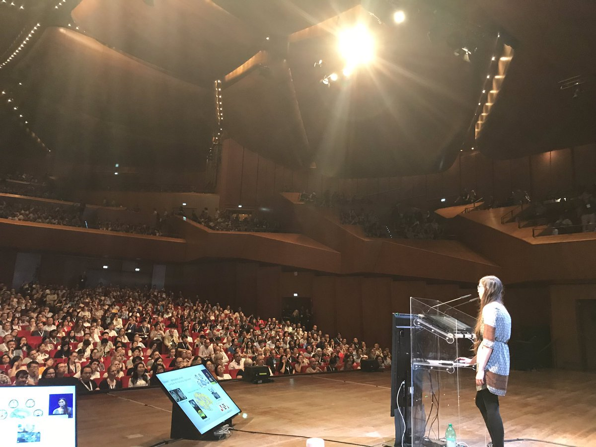
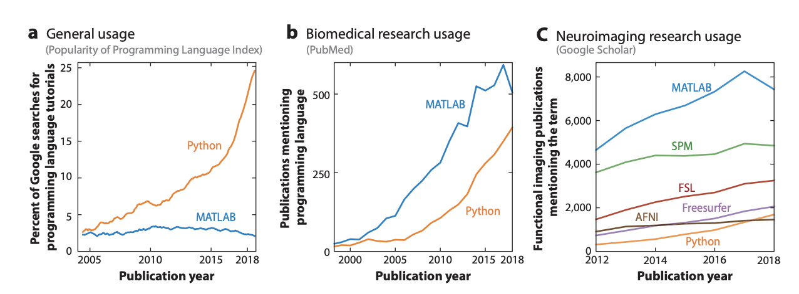

July 29th - August 9th, 2019
NeuroHackademy
Follow along at:

Welcome!
Data-driven discovery
 By
By {kind=link}
{kind=link}
The era of brain observatories
Human Connectome Project (HCP), N = 1,200
Healthy Brain Network (HBN), N = 10,000
Adolescent Brain Cognitive Development (ABCD),
N = 10,000
UK Biobank, N = 500,000
Opportunities
New data sets will enable important new discoveries
Data-driven discovery
Challenges
New methods and approaches are needed
New ways of collaboration
New sociotechnical arrangements
Scientific meetings are great
Scientific meetings are great

Don't you sometimes feel
Like the most valuable part are the coffee breaks?

A scientific meeting that is all coffee breaks!
AstroHackweek (2015 -- )
NeuroHackweek (2016 -- )
GeoHackweek (2017 -- )
Ocean, Fresh water, Chemical engineering, ...
Neurohackademy
A summer school
A conference
A hackathon
Neuroimaging and data science
Tools and practices for
Open
Reproducibile
Data intensive
Neuroscience
The opposite of "open" is not "closed" ...
it's "broken" -- John Wilbanks

Open science
Open science
Reproducibility
Accessibility
Inclusivity
Diversity
Introspection
It's not a monolith
A matter of degree, not of kind
The plan
Week 1: Tutorials and lectures
Week 2: Hackathon
Week 1
Algorithmic foundations of data science
Python: an ecosystem for scientific computing
Free and open source
High-level interpreted language
Python in Astronomy (ADS)


Do neuroscientists use Python?
The weekend
By the time the weekend rolls around
we'll all need a break
There is a lot to see and do in Seattle during the summer
Week 2
Hacking?Historically thought of as:
1. Investigating a subject for its own sake2. Engaging in non-destructive mischief
3. Doing something out of the ordinary or clandestine
4. Exploring the inaccessible
Based on Liz George

Week 2

Collaboration is not optional!
Be pro-active
Ask a lot of questions
Try something new
Find birds of a feather
Take some time off if you need it
People
Organizers
Tal Yarkoni

The people
Organizers
Tal Yarkoni
Jane Koh
The people
Organizers
Tal Yarkoni
Jane Koh
You all!
The space
Alder Commons
Alder 104 (this room)
Alder 103 (around the corner)
Alder 102 (the big space in-between)
Alder 105, 106, 107 (classrooms)
Restrooms, coffee shop, grocery store
Software infrastructure
Your laptops!
Our Jupyterhub:
https://hub.neurohackademy.org/
The cloud (Thursday)
Slack
Code of conduct
http://bit.ly/NHCodeOfConductNow some of you might be thinking
"I don't belong here"
"I've never been to a hackathon"
"I am not even such a great programmer"
"And I don't know enough neuroscience to make a real contribution"
"When others find out, they won't want to work with me"

Thanks!

 https://github.com/WhitakerLab/queen-bee
https://github.com/WhitakerLab/queen-bee
Questions?
Contact information